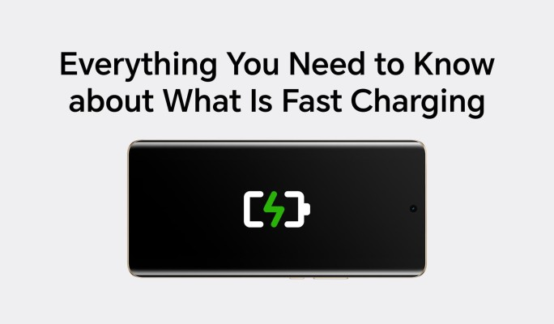
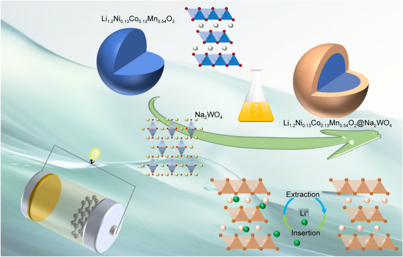
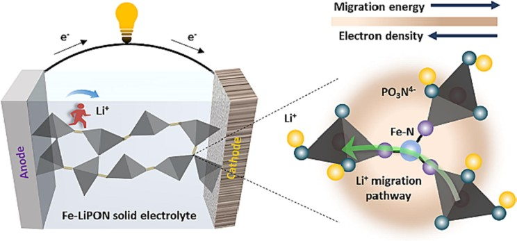
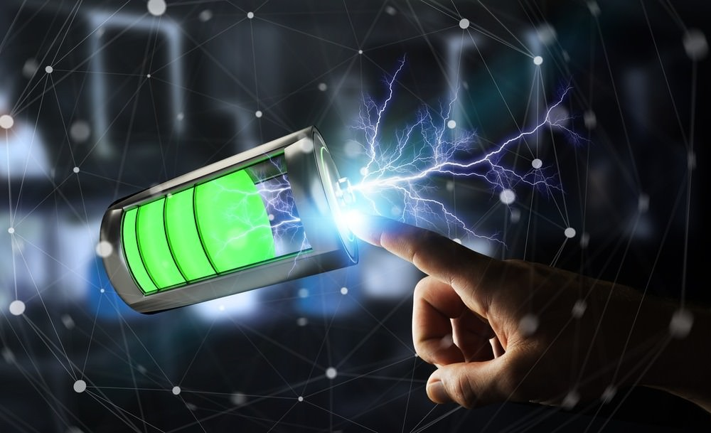

What is Fast Charging?
Fast charging is a technique that allows lithium-ion batteries to reach a full or nearly full charge state in a significantly shorter time compared to traditional charging methods. This technology is crucial for applications like electric vehicles, where rapid charging can minimize downtime and enhance user experience.

Designing Fast-Charging Batteries: Key Considerations
To design a fast-charging battery, it is essential to understand the migration path of lithium ions (Li+) within the battery and optimize various components to accelerate this process.
Understanding Li+ Migration
The typical migration path of Li+ ions in a lithium-ion battery involves the following steps:
- Release from Cathode: Li+ ions are released from the cathode material.
- Electrolyte Migration: Li+ ions move through the electrolyte.
- Separator Passage: Li+ ions pass through the separator.
- Embedding in Negative Electrode: Li+ ions embed themselves in the negative electrode material.
- Diffusion within Negative Electrode: Li+ ions diffuse within the negative electrode material.

Strategies for Enhancing Li+ Migration
Cathode Material Optimization:
- Particle Size: Smaller particle sizes can reduce the diffusion distance for Li+ ions.
- Surface Coating: Surface modifications can improve the interfacial properties of the cathode material, reducing polarization.
Negative Electrode Material Optimization:
- Graphite Structure: Using small graphite particles and incorporating amorphous carbon layers can enhance Li+ diffusion.
Electrolyte Optimization:
- High Concentration: A high-concentration electrolyte can improve conductivity.
- Low Viscosity: A low-viscosity electrolyte can reduce resistance to Li+ ion movement.

Separator Optimization:
- Thin and Porous: A thin, high-porosity separator can minimize ohmic resistance.
Current Collector Optimization:
- Thick Metal Layer: A thicker metal layer can reduce ohmic resistance.
- Special Coatings: Coatings can improve the current collector's conductivity.
Structural Design:
- Lamination: Lamination can increase the overcurrent conductivity.
- Multi-Pole or Full-Pole Technology: These designs can enhance current flow.
Other Factors:
- Conductive Agent Network: Optimizing the conductive agent network can improve electron transfer.
- Binder Ratio: Adjusting the binder ratio can affect the electrode's properties.
- High-Voltage Overcharging: Combining fast charging with high-voltage overcharging can further enhance performance.

While focusing on the Li+ migration rate, it is crucial also to consider lithium evolution and ensure efficient electron transfer to prevent polarization. By addressing these factors, battery manufacturers can develop lithium-ion batteries that charge rapidly and maintain safety and long-term performance.